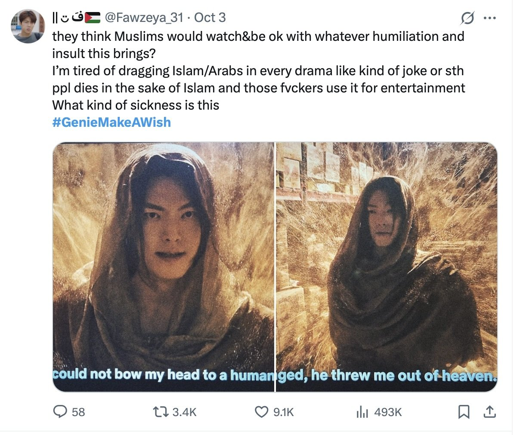
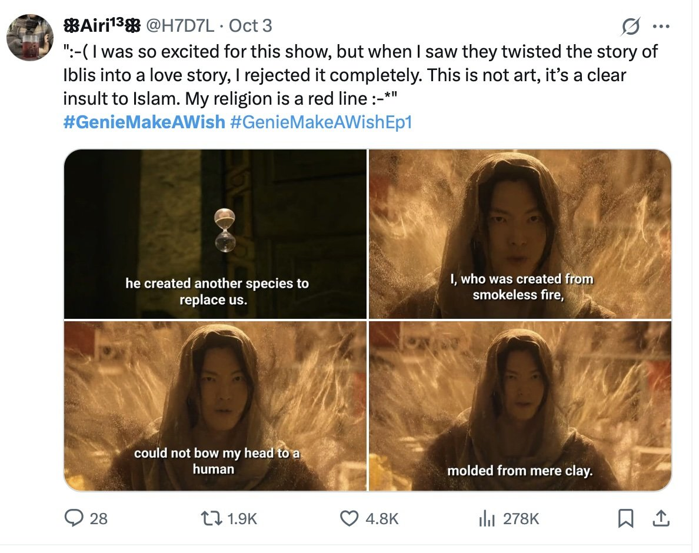
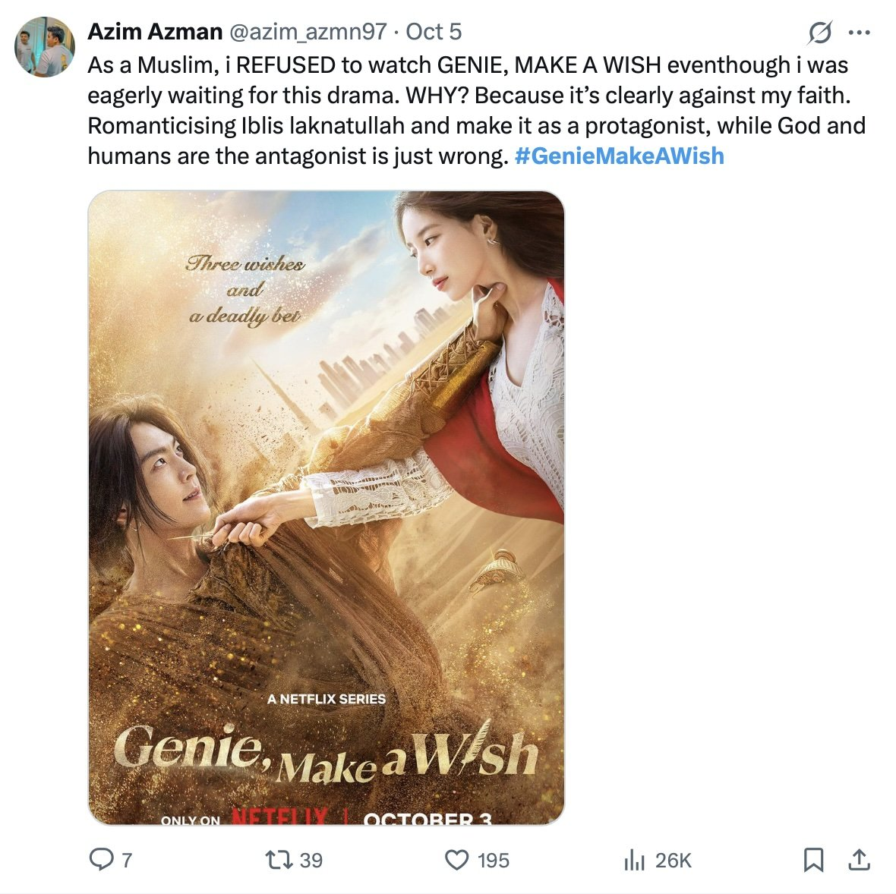
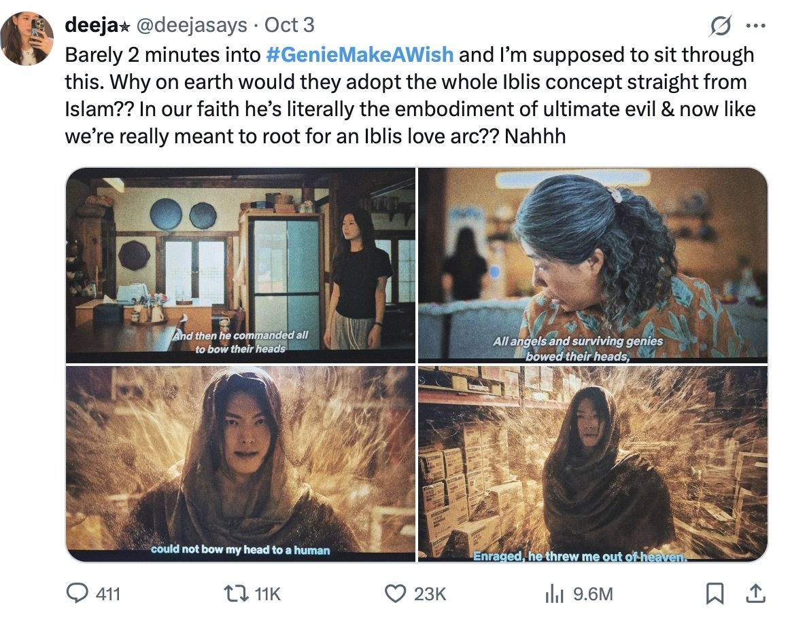
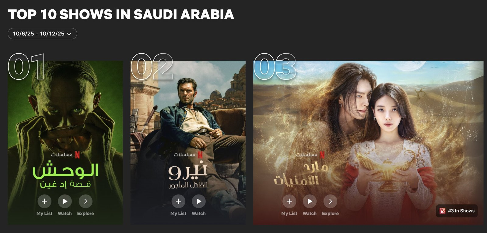

넷플릭스 오리지널 한국 드라마 <다 이루어질지니(Genie: Make a Wish, 김은숙 작가, 안길호 감독)>가 중동 지역에서 예상치 못한 종교적 논란에 휩싸였다. 김우빈·수지 주연의 해당 드라마는 두바이 등 해외 로케이션 촬영을 통해 이국적인 풍경에 판타지 소재인 '지니'를 결합한 로맨틱코미디다. 특히 화려한 비주얼과 스타 캐스팅으로 방영 전부터 큰 주목을 받았다.
이블리스(Iblis) 해석에 대한 무슬림 시청자들의 반응




▲ 이슬람권 시청자 반응 — 출처: X 계정
공개 직후 일부 무슬림 시청자들은 작품이 이슬람의 주요 상징을 오락적 맥락에서 활용한 점에 대해 우려를 제기했다. 핵심 쟁점은 남자 주인공 '지니(Genie)'의 설정이 꾸란에서 '사탄'으로 언급되는 존재 이블리스와 연결된 방식으로 등장한다는 부분이었다. 이슬람에서 이블리스는 신의 명령을 거부한 상징적 존재로 신앙적으로 매우 민감하게 받아들여지는 개념이다. 이러한 이유로 일부 시청자들은 해당 설정이 로맨스 서사와 결합된 점이 적절한지에 대해 의문을 제기했다.
소셜미디어에서는 다양한 시청자들이 작품이 종교적 상징을 사용한 방식에 대해 의견을 나누며 논의가 확산됐다. 일부 이용자는 종교적 상징이 서사 속에서 다뤄지는 방식이 신앙적 맥락과 어긋날 수 있다는 우려를 표했고, 시청을 중단하거나, 비판적인 의견을 남기기도 했다. 이 같은 반응은 글로벌 OTT 콘텐츠가 문화·종교적 요소를 다루는 방식 전반에 대한 토론으로 이어졌으며, 《The Times of India》 산하 매체 《Pop Rant》 또한 이러한 시청자 의견을 소개하며 온라인에서 논의가 확대되고 있음을 전했다.
중립적인 사우디·중동 언론 보도 및 넷플릭스 사우디 쇼부문 3위 기록
사우디 언론 또한 관련 소식을 보도했다. 《MBC》 그룹 계열 매체 《ET》는 "지니가 사실 악마 자신으로 드러난다는 설정이 일부 시청자 사이에서 논란을 불러일으켰다."고 전하면서도 비주얼 완성도와 흥행성, 철학적 주제의식에 대해서는 높이 평가했다. 아랍권 온라인 매체 《Arab Mirror》는 해당 작품이 이블리스 상징을 낭만화했다는 논란을 전하면서도 "인간 내면의 욕망과 자유를 철학적으로 탐구한 수작"이라 평가했다. 이처럼 중동 언론은 작품을 비난하기보다, 논란의 여지를 인정하면서도 한국 드라마의 예술성과 철학적 메시지에 주목했다.

▲ 사우디 넷플릭스 TV 프로그램 부문 3위에 오른 '다 이루어질지니' — 출처: 넷플릭스
이러한 논쟁 속에서도 <다 이루어질지니>는 10월 둘째 주 사우디 넷플릭스 TV 프로그램 부문 3위에 오르며 높은 인기를 유지하고 있다. 높은 시청률은 작품의 인기를 보여주는 지표이지만 동시에 논란이 확산될 수 있는 여지를 남기고 있어 향후 시청자 반응과 언론 보도 추이에 관심이 집중된다.
<다 이루어질지니>를 둘러싼 논란은 K-콘텐츠가 세계 시장으로 확장되는 과정에서 마주한 문화 번역의 한계와 종교적 감수성의 경계를 드러낸다. 창작의 자유와 문화적 존중 사이에서 균형을 찾는 과제, 그리고 종교적 상징을 어떻게 재해석할 것인가의 문제는 글로벌 OTT 시대의 필연적인 고민으로 남아 있다.
사진 출처 및 참고자료
넷플릭스, https://www.netflix.com/tudum/top10/saudi-arabia
X 계정(@deejasays), https://x.com/deejasays
X 계정(@azim_azmn97), https://x.com/azim_azmn97
X 계정(@H7D7L), https://x.com/H7D7L
X 계정(@Fawzeya_31), https://x.com/Fawzeya_31
X 계정(@__Aeesha), https://x.com/__Aeesha
《ET》 (2025. 10. 7). Genie Make a Wish — فانتازيا رومانسية, https://zrr.kr/l6wFxf
《Arab Mirror》 (2025. 10. 5). The cast and story of the Korean series Genie Make a Wish: The reasons for the great controversy surrounding it.
《Pop Rant》 (2025. 10. 4). Fans slam 'Genie, Make A Wish' for using Iblis concept: Calls for cancellation grow.
《Pop Rant》 (2025. 10. 7). Genie: Make A Wish faces intense backlash as Netflix show accused of romanticising Iblis, poprant.indiatimes.com